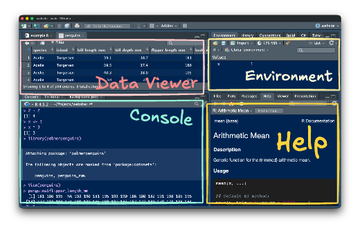

Welcome to GES 668: Building Spatial Datasets
2026-02-11
Our goals
- ask and answer questions with data
- ask and answer questions with spatial data
- reproducibly ask and answer questions with spatial data
- use modern tools and methods to reproducibly ask and answer questions with spatial data
- collaboratively use modern tools and methods to reproducibly ask and answer questions with data
What is a reproducible data analysis?
- Can you get the same results every time you do the analysis?
- Can others get the same results?
- Can you use get the same results when you do the analysis with similar data?
Why are you here?
What experiences do you bring with you today?
Why am I here?
A few things about me:
- I first started using GIS as a student studying anthropology and historic preservation at the University of Maryland College Park around 2007
- I started learning R as a student at the John Hopkins University School of Public Health in 2019
- I started developing R packages while working at the Neighborhood Design Center in 2020
- I started work as a planner at the Baltimore City Department of Planning in 2022 and agency data lead in 2024
What are our toolkit for this class?
- Programming tools
- R (a programming language)
- RStudio (an Integrated Development Environment - IDE)
- tidyverse (a family of R packages)
- sf (a R package for spatial data)
- Quarto (a open-source publishing system for mixing text and code)
- Reproducibility tools
- Git
- GitHub
- Learning tools
- Course website
- GitHub classroom
- Discord
RStudio IDE
Communication 📬
- I am not always on top of my email.
- Please post questions to the Discord if you think other students could help (or others may share your question).
- If you don’t get a timely response by email, message me on Discord.
Assignments
- Weekly check-in
- Practice exercises
- Final project
Weekly check-in 📝
- The goal of the weekly check-in is to help you stay on top of the reading and get your questions out for everyone to benefit from.
Practice exercises 🛠️
Each practice exercise will include a mix of questions and coding prompts excerpted or adapted from R for Data Science, Geocomputation with R, and other resources.
Questions may include both close-ended “fill in the blank” style questions and more open-ended prompts.
Feedback on the exercises is welcome!
Readings 📚
- What are the readings?
- What is the difference between required and optional readings?
- How can you get the most out of the readings?
R for Data Science

Geocomputation with R

Note that this book also includes extensive information on raster data. This is not a topic covered in any detail as part of this class and can be skipped.
Other readings and resources
- Vignettes and other R package documentation
- Recorded presentations
- Journal articles
Required vs. Optional
- Optional readings may include whole books or websites. These are recommended if you are interested in learning more about a topic—but may be infeasible
Getting the most out of readings
Take notes on questions or observations while you reading. Use these notes to submit your weekly check-in.
Readings on coding in R should be done at a computer with RStudio open. Try re-typing code from the text into RStudio and running the code to see how it works.
Miscellaneous
What can you expect during class
Make this a safe and mutually supportive space
We are all learning! No prior programming experience is required and we should all work to make this an inclusive experienced for everyone.
Attendance and remote participation
Do come to class. You’ll get the most out of this semester if you are present and participating.
Don’t come to class sick! Please prioritize your health and well-being if you are sick or need to care for someone else.
You can participate online if you need to. We can screen share sessions to Discord and record lectures if needed.
Using ChatGPT or other LLMs
You are strongly discouraged from using ChatGPT, Claude, or other large language models to help with your project or, if desired, assignments.
You must include information about when and how you use it including your specific prompts and tools used.
You should use these tools with caution. They provide non-working code and describe non-existent functions and packages. Don’t let this tool stand in the way of developing your own understanding of R and how it works.
Welcome again!